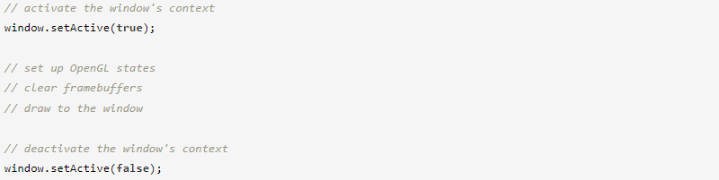

Использование OpenGL в окне SFML
Вступление
Это руководство не о самом OpenGL, а скорее о том, как использовать SFML в качестве среды для OpenGL и как смешивать их вместе.
Как вы знаете, одной из важнейших особенностей OpenGL является переносимость. Но одного OpenGL будет недостаточно для создания полных программ: вам нужно окно, контекст рендеринга, пользовательский ввод и т. д. У вас не будет другого выбора, кроме как написать код для конкретной ОС, чтобы обрабатывать все это самостоятельно. Вот где в игру вступает модуль sfml-window. Давайте посмотрим, как это позволяет вам играть с OpenGL.
Включение и привязка OpenGL к вашему приложению
Заголовки OpenGL не одинаковы для каждой ОС. Поэтому SFML предоставляет «абстрактный» заголовок, который позаботится о том, чтобы включить нужный файл.
#include <SFML/OpenGL.hpp>
Этот заголовок включает в себя функции OpenGL и ничего больше. Иногда люди думают, что SFML автоматически включает заголовки расширений OpenGL, потому что SFML сам загружает расширения, но это деталь реализации. С точки зрения пользователя загрузка расширения OpenGL должна обрабатываться так же, как и любая другая внешняя библиотека.
Затем вам нужно будет связать вашу программу с библиотекой OpenGL. В отличие от того, что он делает с заголовками, SFML не может предоставить унифицированный способ связывания OpenGL. Следовательно, вам нужно знать, на какую библиотеку ссылаться в зависимости от используемой операционной системы («opengl32» в Windows, «GL» в Linux и т. д.).
Функции OpenGL начинаются с префикса «gl». Помните об этом, когда вы получаете ошибки компоновщика, это поможет вам найти библиотеку, которую вы забыли связать.
Создание окна OpenGL
Поскольку SFML основан на OpenGL, его окна готовы к вызовам OpenGL без каких-либо дополнительных усилий.
Если вы считаете, что это слишком автоматически, конструктор sf::Window имеет дополнительный аргумент, который позволяет вам изменить настройки базового контекста OpenGL. Этот аргумент является экземпляром структуры sf::ContextSettings, он предоставляет доступ к следующим настройкам:
- depthBits — количество битов на пиксель, используемое для буфера глубины (0, чтобы отключить его).
- stencilBits — количество битов на пиксель, используемое для буфера трафарета (0, чтобы отключить его).
- antialiasingLevel — уровень мультисэмплинга
- majorVersion и minorVersion содержат запрошенную версию OpenGL.
Если какой-либо из этих параметров не поддерживается графической картой, SFML пытается найти ближайшее допустимое совпадение. Например, если 4-кратное сглаживание слишком велико, он пытается использовать 2-кратное сглаживание, а затем возвращается к 0.
В любом случае вы можете проверить, какие настройки SFML на самом деле использовал с помощью функции getSettings:
Версии OpenGL выше 3.0 поддерживаются SFML (если ваш графический драйвер может их обрабатывать). Поддержка выбора профиля контекстов 3.2+ и установки флага отладки контекста была добавлена в SFML 2.3. Флаг прямой совместимости не поддерживается. По умолчанию SFML создает контексты 3.2+, используя профиль совместимости, поскольку графический модуль использует устаревшие функции OpenGL. Если вы собираетесь использовать графический модуль, обязательно создайте свой контекст без настройки основного профиля, иначе графический модуль не будет работать правильно. В OS X SFML поддерживает создание контекстов OpenGL 3.2+ только с использованием основного профиля. Если вы хотите использовать графический модуль в OS X, вы ограничены использованием устаревшего контекста, который подразумевает OpenGL версии 2.1.
Типичная программа OpenGL с SFML
Вот как будет выглядеть полная программа OpenGL с SFML:
Здесь мы не используем window.isOpen() в качестве условия основного цикла, потому что нам нужно, чтобы окно оставалось открытым до завершения программы, чтобы у нас все еще был допустимый контекст OpenGL для последней итерации цикла и код очистки.
Не стесняйтесь взглянуть на примеры «OpenGL» и «Window» в SFML SDK, если у вас есть дополнительные проблемы, они более полны и, скорее всего, содержат решения ваших проблем.
Управление контекстами OpenGL
Каждое окно, созданное в SFML, автоматически поставляется с контекстом OpenGL. При вызове любых функций OpenGL они работают с текущим активным контекстом. Таким образом, требуется, чтобы контекст был активен каждый раз, когда вызываются функции OpenGL. Если контекст не активен при вызове функции OpenGL, вызов функции не приведет к желаемому эффекту, поскольку нет состояния, на которое он мог бы воздействовать.
Чтобы активировать контекст окна, используйте window.setActive(), который аналогичен window.setActive(true). Активация контекста, в то время как другой в настоящее время активен, приведет к тому, что текущий активный контекст будет неявно деактивирован до того, как будет активирован новый. Чтобы явно деактивировать контекст окна, используйте window.setActive(false). Это требуется, если контекст должен быть активирован в другом потоке, как будет объяснено позже. Однако обычно рекомендуется просто деактивировать контекст каждый раз, когда вы выполняете пакет операций OpenGL. Следуя этому совету, каждый пакет операций будет явно обернут между вызовами активации и деактивации. Для этой цели можно написать вспомогательный класс RAII.
При отладке проблем с OpenGL в SFML первым шагом всегда является проверка того, что контекст активен при вызове функций OpenGL. Не думайте, что SFML будет неявно активировать контекст или что SFML сохранит текущий активный контекст при обращении к библиотеке. Единственная предоставляемая гарантия заключается в том, что контекст, активный в текущем потоке, не изменится между вызовами window.setActive(true) и window.setActive(false), если между ними не будет сделано никаких других вызовов в библиотеку. Во всех других случаях следует предположить, что текущий контекст мог измениться, поэтому требуется явная повторная активация ранее активного контекста, чтобы гарантировать, что ранее активный контекст снова станет активным. Также убедитесь, что правильный контекст активен при вызове функции OpenGL. Активный контекст не только обеспечивает среду выполнения для операций OpenGL, но также определяет целевой буфер кадра для любых команд рисования. Вызов функций отрисовки OpenGL при активном контексте без видимого буфера кадра приведет к тому, что эти команды отрисовки не будут производить никакого видимого вывода. Разделение операций OpenGL между несколькими контекстами также приведет к тому, что изменения состояния будут распространяться по контекстам. Если какая-либо последующая операция отрисовки предполагает, что установлены определенные состояния, в этом случае она не даст правильных результатов.
Настоятельно рекомендуется при написании кода OpenGL всегда проверять, не возникали ли какие-либо ошибки OpenGL после каждого вызова функции OpenGL. Это делается с помощью функции glGetError(). Проверка на наличие ошибок после каждого вызова функции поможет сузить круг возможных ошибок и значительно повысить эффективность отладки.
В зависимости от версии и возможностей доступного контекста необходимо соблюдать осторожность, чтобы вызывать только те функции, которые действительно допустимы в текущем контексте. В противном случае часто будут генерироваться ошибки GL_INVALID_OPERATION или GL_INVALID_ENUM. Чтобы запросить актуальную версию и возможности контекста, созданного с окном или отдельно, используйте соответственно window.getSettings() или context.getSettings(). Имейте в виду, что эти параметры могут отличаться от параметров, переданных при создании контекста, если реализация OpenGL не соответствует всем требованиям. Рекомендуется всегда проверять, действительно ли созданный контекст обеспечивает функциональные возможности, необходимые для выполнения кода OpenGL. Это может привести к путанице при загрузке расширений OpenGL в контексте с более широкими возможностями и попытке использовать их в контексте с менее широкими возможностями или наоборот.
Управление несколькими окнами OpenGL
Управление несколькими окнами OpenGL не сложнее, чем управление одним, нужно помнить лишь несколько вещей.
Вызовы OpenGL выполняются в активном контексте (таким образом, в активном окне). Поэтому, если вы хотите рисовать в двух разных окнах в одной и той же программе, вы должны выбрать, какое окно активно, прежде чем что-то рисовать. Это можно сделать с помощью функции setActive:
В потоке может быть активен только один контекст (окно), поэтому вам не нужно деактивировать окно перед активацией другого, оно деактивируется автоматически. Вот как работает OpenGL.
Еще одна вещь, которую нужно знать, это то, что все контексты OpenGL, созданные SFML, совместно используют свои ресурсы. Это означает, что вы можете создать буфер текстуры или вершины с любым активным контекстом и использовать его с любым другим. Это также означает, что вам не нужно перезагружать все ресурсы OpenGL при воссоздании окна. Только совместно используемые ресурсы OpenGL могут совместно использоваться контекстами. Примером неразделяемого ресурса является объект массива вершин.
OpenGL без окна
Иногда может быть необходимо вызывать функции OpenGL без активного окна и, следовательно, без контекста OpenGL. Например, при загрузке текстур из отдельного потока или до создания первого окна. SFML позволяет создавать контексты без окон с помощью класса sf::Context. Все, что вам нужно сделать, это создать его экземпляр, чтобы получить действительный контекст.

Рендеринг из тредов
Типичная конфигурация многопоточной программы — обработка окна и его событий в одном потоке (основном), а рендеринг — в другом. Если вы это сделаете, следует помнить важное правило: вы не можете активировать контекст (окно), если он активен в другом потоке. Это означает, что вы должны деактивировать свое окно перед запуском потока рендеринга.
Использование OpenGL вместе с графическим модулем
Этот урок был о смешивании OpenGL с sfml-window, что довольно просто, поскольку это единственная цель этого модуля. Смешивание с графическим модулем немного сложнее: sfml-graphics тоже использует OpenGL, поэтому необходимо соблюдать особую осторожность, чтобы SFML и пользовательские состояния не конфликтовали друг с другом.
Если вы еще не знакомы с графическим модулем, все, что вам нужно знать, это то, что класс sf::Window заменен классом sf::RenderWindow, который наследует все его функции и добавляет возможности для рисования конкретных объектов SFML.
Единственный способ избежать конфликтов между SFML и вашими собственными состояниями OpenGL — это сохранять/восстанавливать их каждый раз, когда вы переключаетесь с OpenGL на SFML.
Самое простое решение — позволить SFML сделать это за вас с помощью функций pushGLStates/popGLStates:
Поскольку SFML ничего не знает о вашем коде OpenGL, он не может оптимизировать эти шаги и в результате сохраняет/восстанавливает все доступные состояния и матрицы OpenGL. Это может быть приемлемо для небольших проектов, но может оказаться слишком медленным для больших программ, требующих максимальной производительности. В этом случае вы можете самостоятельно сохранять и восстанавливать состояния OpenGL с помощью glPushAttrib/glPopAttrib, glPushMatrix/glPopMatrix и т. д.
Если вы сделаете это, вам все равно потребуется восстановить собственные состояния SFML перед рисованием. Это делается с помощью функции resetGLStates.
Сохраняя и восстанавливая состояния OpenGL самостоятельно, вы можете управлять только теми, которые вам действительно нужны, что приводит к уменьшению количества ненужных вызовов драйвера.